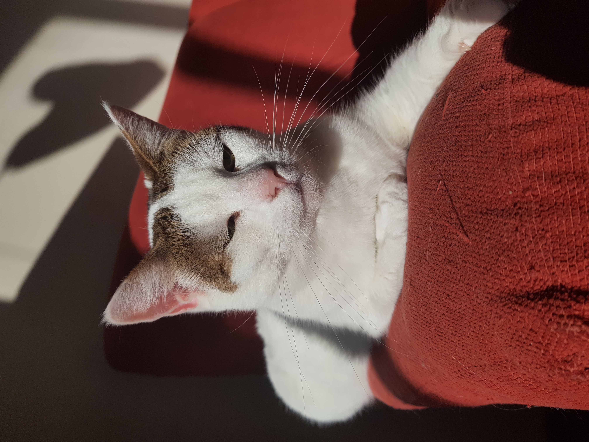

Hello 🤗
I'm Eleonore, and welcome in my profil
I am a ESSEC student, I'm from Brittany, and I love running, reading and my cats. I am very curious, and I like to learn, especially programming with le Wagon
Discover le WagonRunning
I discovered the joys of running during containment with my father, and now, I run three or four times a week. My goal is to participate in the Paris solidarity marathon at the end of the year 2023.
We don't run to be better than someone, we run to be better than we were yesterday
Reading
I've loved reading since I was a little girl, and still today I devour books with passion. I really like crime novels, my favorite is "fils de personne" by Jean-François Pasques. I also enjoy the political, economic and historical essays.
When I think of all the books I still have to read, I am sure to be happy. Jule Renard
My cats

I have two cats that I love. My first cat is call Lotus, she is four years old, and the seconde is Saucisse, she is two years old. I love my cats very much, but with my move I see them much less.
God to invent the cat so that man has a tiger to pet at home Victor Hugo